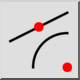
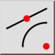
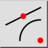
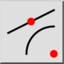

Centrer
Barre d'outil / icône :
 

Menu : Accrochage > Centrer
Raccourci : S, C
Commandes : snapcenter | sc
Ceci est une traduction automatique.
Barre d'outil / icône :
 

Menu : Accrochage > Centrer
Raccourci : S, C
Commandes : snapcenter | sc
Accrochage au centre des arcs, cercles et ellipses ainsi qu'au milieu des
lignes et aux points.